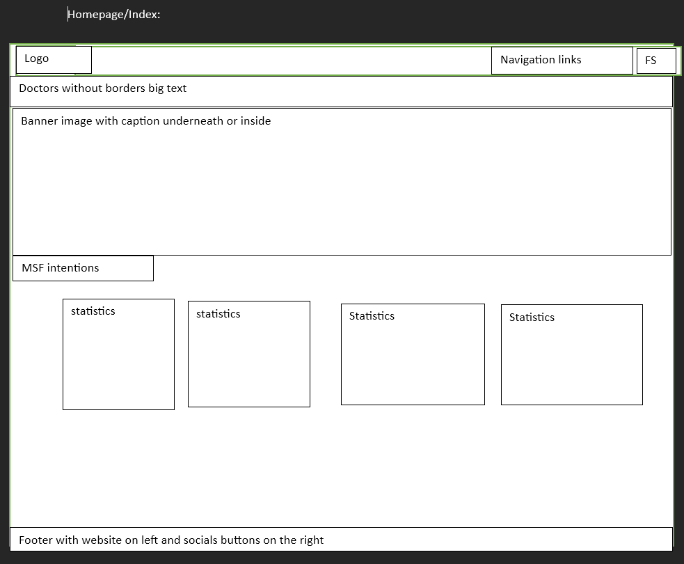
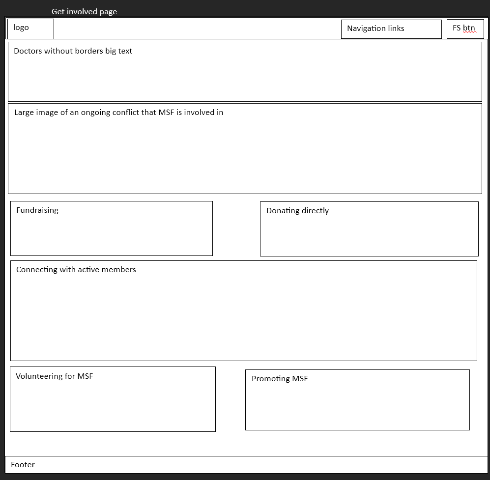
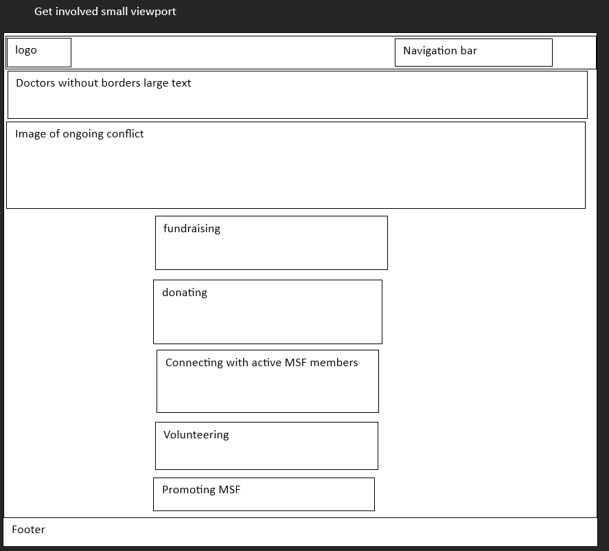
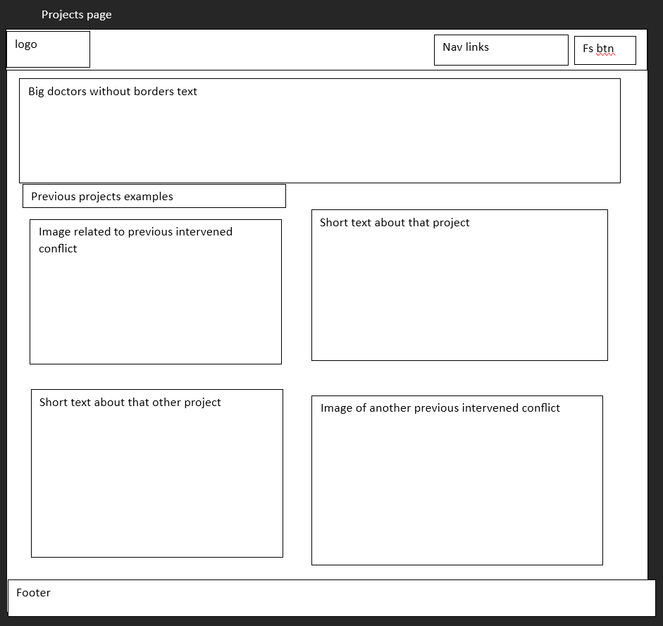
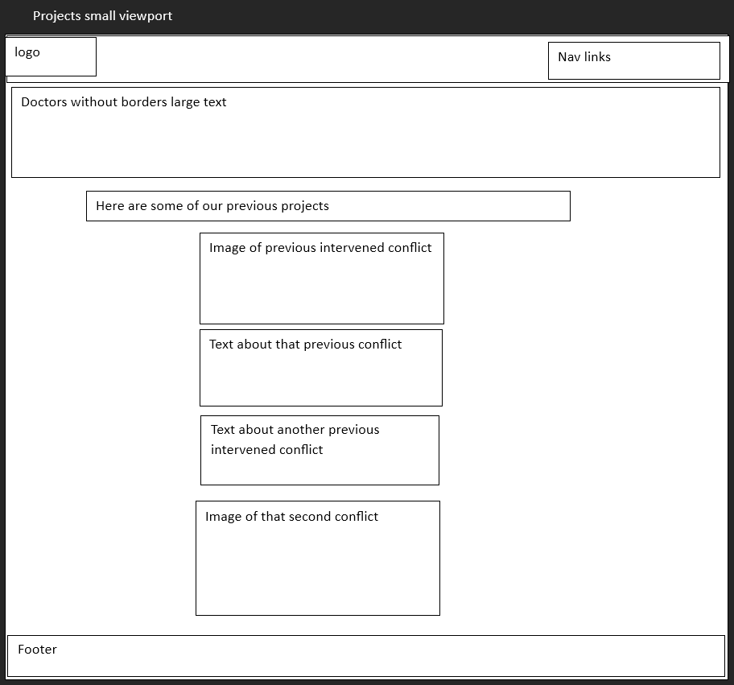
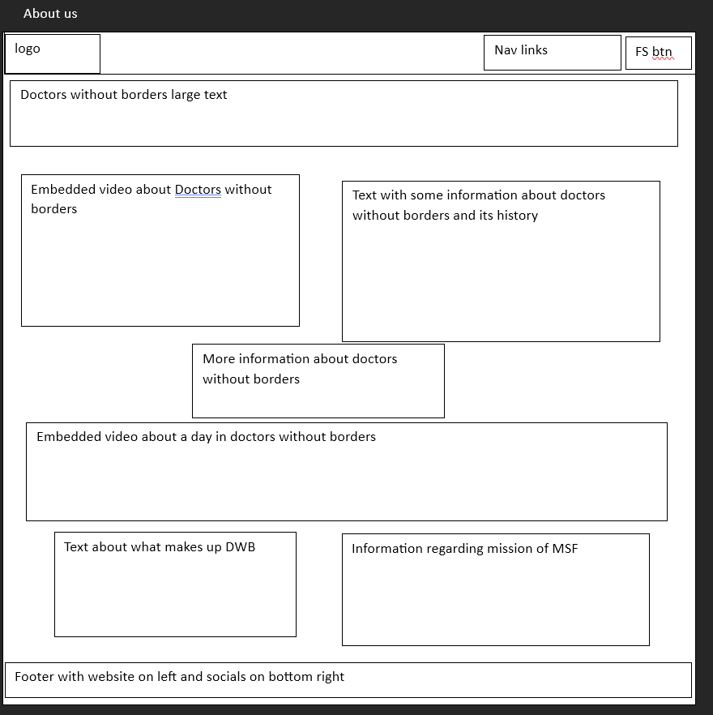
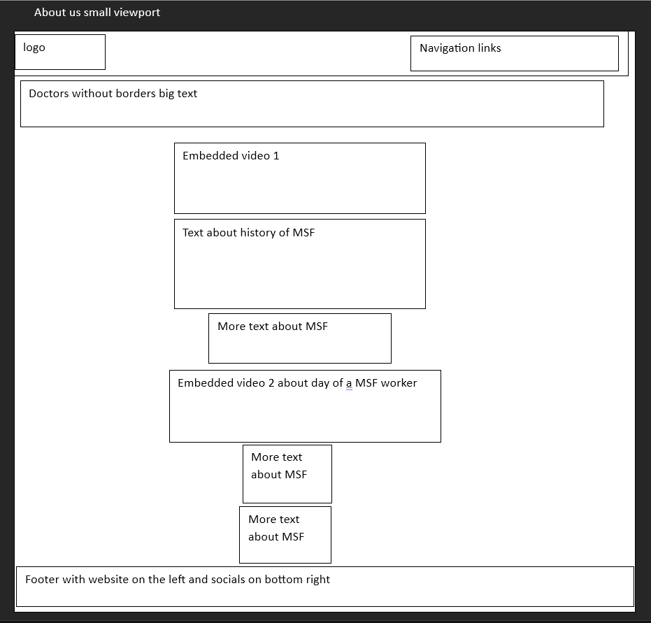
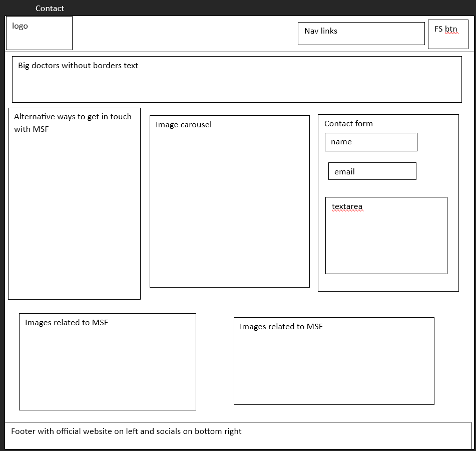
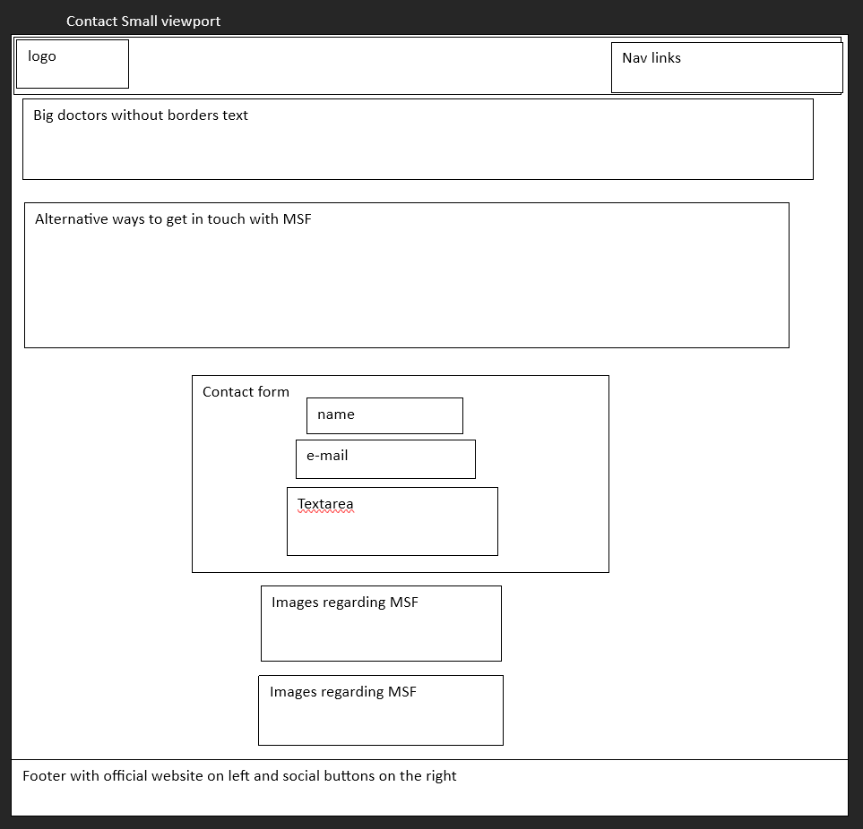

Report:
Name:Quinten Scholtes
Back to Website
Introduction:
The primary focus of the website that I created is on the previous projects and initiatives that
Doctors without Borders has taken for outbreaks or problem-zones. The structure that I took for the website
is to give a brief overview of what DWB has done so far, and what their purpose is as a organization itself.
To facilitate this I focused on a structure that did not have very large blocks of text but rather
had short and concise blocks of texts with lots of media included. I wanted to keep the structure
somewhat variable as well between websites to keep the end-user engaged therefore I decided to not
have the exact identical layout for every webpage. In my own personal experience the websites that I consider
successful have a good mix between content and media with a decent bit spacing between it, this
allows the user to not become distracted from the primary focus of the content while still keeping them engaged.
Inspiration:
My first inspiration for the website that I have created is the DWB website itself, there is a lot of javascript
that makes the website interactive, with effective use of white space and a basic yet effective choice of colors
that keeps the website from going bland. The iconic red color of the organization inspired me to use a gradient
for
the background color uniformly on all the web pages and create the navbar in red too.
Another inspiration that I had for the website was The Odin Project, which is an open source free course where
there are web sites
given and the user has to style them in the form of a finished picture that is provided. I felt like they were
able to
open up my creative side and think outside of the box literally when it comes to the whole box method used for web
pages.
It is different to see proffesional websites and use them than to actually try to style the websites in a specific
manner.
Lastly I was greatly inspired in the creation of my website going through the W3schools website and looking
through all the different
ways things can be created. There were countless times where I had to use external resources for help ,for example
how to keep the
navigation bar always on top even during scrolling, or the footer.
Accesibility:
The website that I have created has multiple methods that were used to make it accessibile. Firstly I ensured that
I used a simple
navigation for the website itself. I created a navigation bar with white text on a red background that makes the
links for the other
pages easy to see. In addition to this I wanted to keep it simple so I made the font size of increase of whenever
an item in the navbar
is selected to help where people may possibly have eyesight issues.
Futhermore another way that I made the website accessible is by creating a fullscreen button on the top right of
every page through
javascript. This permits users with eyesight impairments to have a greater overview of the website as a whole.
This is particularily useful
for some of the images on the website that grow in size responsively to the size of the viewport of the user.
The third method I utilized to make the website more accessibile is to ensure that all the images have alt tags on
this. This allows users
with lack of eyesight to get an audible description of what is occuring in the images, and these can in turn also
help the user understand
the content of the page they are currently on.
Usability:
The primary focus in terms of usability of the website was that I wanted there to a good overiew visibile of the
website at all times.
The navigation bar has to always be visible for when a user has scrolled through a web page, and the user always
has the social media links
visible at the bottom of the page for the organization that I chose. These aid in useability as they permit
quicker navigation of the site without having
to go look how to get to the next page.
Since the focus of our final project was to be responsive, I made efforts in regards to usability by trying to
make content and the layout of the website
responsive in reaction to the viewport size itself. This gave me the largest issue at hand because once you start
having lots of different classes and ID's
with multiple nested containers it can get difficult quickly to do this effectively. Doing this allows the website
to be viewable on more than just
a desktop with a large monitor size.
Additionally another method I used to aid in useability of the website was to keep a uniform color scheme among
all the web pages in addition
to a uniform navbar and footer. I did this in anattempt to keep the website uniform while still keeping the
content and layout variable. This
helps in usability so that they user doesnt have to relearn on every web page how to navigate through all the
pages.
Learning:
The largest thing I had to learn was how to get the sizing of boxes, images and content responsive. This becomes
difficult quickly
when you have many nested classes with items in it, with many of them having their own properties. In part I was
able for some portions
I used bootstrap for example with the big image banner on the main page, while with other parts I had to decrease
the text size, or the size of
a box of content when a viewport size threshold was reached. Trying to make the web page responsive in terms of
content,
layout, useability is and was by far the most challenging obstacle for me, and I was only able to achieve it
partially.
Another focal point for learning for me was the layout of the website itself. While certain CSS properties like
padding or margin are all easy
to understand, placing content on the page itself exactly where and HOW you want it to is a different story,
especially when there are other
boxes you need to think relative to them and how the layout will change the perception of the website. I achieved
this through using resources
such as W3 schools and stackoverflow to get an idea of how other web pages are structured and nested to achieve
their intended layout.
Finally another thing I had to learn in the process of creating my website was some of the javascript event
listeners and how one should approach
using them to create a responsive website. The lectures and videos in the course materials were quite well in
going over all this, but as a first time
javascript user and attempt at web development things can become overwhelming quickly. I achieved this through
looking online how other people
achieved certain responsive events with javascript in combination with resources like W3schools.
Evaluation 1:
Personally I think that the most succesful parts of the website I created are the navigation bar and footer. I
believe these are succesful
because the colors I used for them in addition to the styling give off a similar real life look of a website that
the organization itself would also use.
They are simple to use, easy to understand and see therefore they are effective. The addition of the scroll
progress bar created with javascript
complements the colors of the organizations logo too.
Furthermore I think that the general idea of the layout of the website is good, there is no overabundance of text
or an overflow of media that make the website
too boring nor too wild in terms of visually.
Evaluation 2:
As previously mentioned, one of the main areas that I can improve on is the layout of the website when there is a
small viewport. I tried my best
to get elements and content to align vertically when this occurs but I may have oversophisticated the whole
process through too many different css
properties in children of parent containers, and how these all interact with each other. If i do things
differently another time I want to start off by
creating multiple different mock-ups then try to visualize how I would set up the content in them, and in turn how
I would resize them or reorder them for smaller
viewports. Doing this whole website on my own in comparison to the mid-term really indicated the importance of a
strong planning phase, and turning
that planning phase into test pages before one complciates itself too much by starting with CSS and lableling
content with ID's and Classes.
It was a real eye-opener to me how in depth the functioning of a website can go with containerisation, what
affects the containers have with each other,
what the properties of the nested children will do and how difficult it can be to create effective websites with
lots of different boxes of content. Inherently this also made me realize and understand that it can be a good idea
in addition to the wireframes to also pre-plan names of containers/classes. I attempted to use the Boostrap
framework
for the project but after completing the website I realized that this was a mistake, there were CSS rules within
Boostrap that
conflicted with some of the CSS that I wanted to apply so i had to set !important to some rules.This may also have
been
due to my lack of experience with the inheriting of CSS styling from parent containers.
Resources:
The tools that I used to create my website are VSC(code editor),Bootstrap,Slack for issues that I had, and
Microsoft Word to create the wireframes.
Alligator.io. “How to Use CSS Grid Properties to Justify and Align Content and Items.” DigitalOcean, DigitalOcean,
16 Mar. 2021, www.digitalocean.com/community/tutorials/css-align-justify.
“CSS - How Can I Ensure the Footer Is Always at the Bottom of the Page?” 30 Seconds of Code, Angelos Chalaris, 30
Oct. 2022,
www.30secondsofcode.org/css/s/footer-at-the-bottom/#:~:text=You%20can%20use%20flexbox%20to,and%20flex%2Ddirection%3A%20column%20.
“CSS Flexible Box Layout Module Level 1.” W3C, 19 Nov. 2018, www.w3.org/TR/css-flexbox-1/#flex-common.
CSS Layout - Horizontal & Vertical Align, www.w3schools.com/css/css_align.asp. Accessed 12 Feb. 2024.
“CSS Links.” CSS Styling Links, www.w3schools.com/css/css_link.asp. Accessed 5 Feb. 2024.
“Gradient Generator.” CSSmatic,
www.cssmatic.com/gradient-generator#’\-moz\-linear\-gradient\%28left\%2C\%20rgba\%28248\%2C80\%2C50\%2C1\%29\%200\%25\%2C\%20rgba\%28241\%2C111\%2C92\%2C1\%29\%2050\%25\%2C\%20rgba\%28246\%2C41\%2C12\%2C1\%29\%2051\%25\%2C\%20rgba\%28240\%2C47\%2C23\%2C1\%29\%2071\%25\%2C\%20rgba\%28231\%2C56\%2C39\%2C1\%29\%20100\%25\%29\%3B’.
Accessed 10 Feb. 2024.
“How to Resize an Image Using CSS.” BrowserStack, 19 Apr. 2023,
www.browserstack.com/guide/how-to-resize-image-using-css.
M, Esther. “Create a Navbar with CSS Flexbox.” DEV Community, DEV Community, 8 Nov. 2020,
dev.to/jungjungie/create-a-navbar-with-css-flexbox-2leh.
Mark Otto, Jacob Thornton. “Carousel.” · Bootstrap v5.3, getbootstrap.com/docs/5.3/components/carousel/. Accessed
13 Feb. 2024.
MozDevNet. “Scroll Progress Animations in CSS: MDN Blog.” MDN Web Docs,
developer.mozilla.org/en-US/blog/scroll-progress-animations-in-css/. Accessed 15 Feb. 2024.
Nickf, et al. “How Do You Add CSS with Javascript?” Stack Overflow, 1 Mar. 1955,
stackoverflow.com/questions/707565/how-do-you-add-css-with-javascript.
R/Webdev on Reddit: Flexbox CSS Cheat Sheet, www.reddit.com/r/webdev/comments/nvzhi0/flexbox_css_cheat_sheet/.
Accessed 2 Feb. 2024.
W3.Css Progress Bars, www.w3schools.com/w3css/w3css_progressbar.asp. Accessed 9 Feb. 2024.
Appendices:
Index page wireframe

Get involved page wireframe

Get involved page small viewport

Projects page wireframe

Projects page small viewport

About us page wireframe

About us page small viewport

Contact page wireframe

Contact page small viewport
